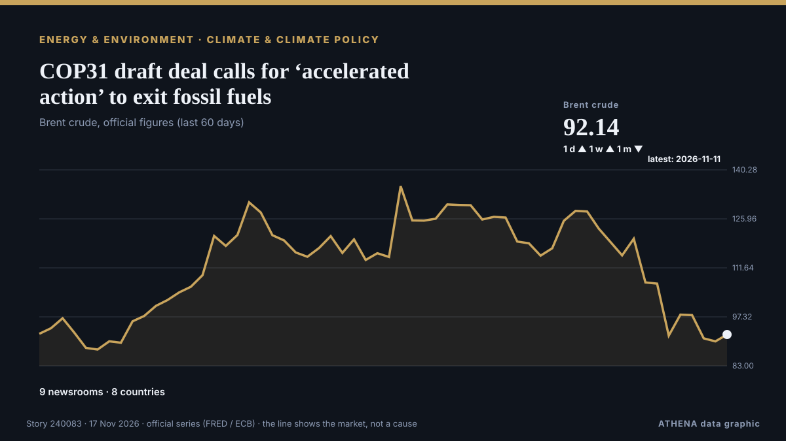

Ενέργεια, Πόροι & Περιβάλλον
ΧορηγούμενοΠαρουσιάζεται από  Cybernetics and Artificial Intelligence Lab Welcome to the Cybernetics and Artificial Intelligence Laboratory, established at the Department of Business Administration of the National and Kapodistrian University of Athens. The lab is headed by Professor Dimitrios Thomakos. The lab aims to do research that can be published in top venues. Our research uses tools and methods of Artificial Intelligence, and lies in the following areas: - Forecasting - Decision making - Cyber security - Finance We are always looking forward to collaborating with exceptional students!
Cybernetics and Artificial Intelligence Lab Welcome to the Cybernetics and Artificial Intelligence Laboratory, established at the Department of Business Administration of the National and Kapodistrian University of Athens. The lab is headed by Professor Dimitrios Thomakos. The lab aims to do research that can be published in top venues. Our research uses tools and methods of Artificial Intelligence, and lies in the following areas: - Forecasting - Decision making - Cyber security - Finance We are always looking forward to collaborating with exceptional students!
Οι τίτλοι των ειδήσεων παρουσιάζονται στα αγγλικά, όπως δημοσιεύτηκαν.

Κλίμα & κλιματική πολιτικήCOP31 draft deal calls for ‘accelerated action’ to exit fossil fuels
Draft urges countries to raise electricity's share of final energy demand to 35% by 2035. από Express Tribune
| 4 Νοε | 99 |
|---|---|
| 5 Νοε | 96 |
| 6 Νοε | 60 |
| 7 Νοε | 47 |
| 8 Νοε | 55 |
| 9 Νοε | 110 |
| 10 Νοε | 110 |
| 11 Νοε | 113 |
| 12 Νοε | 90 |
| 13 Νοε | 75 |
| 14 Νοε | 40 |
| 15 Νοε | 43 |
| 16 Νοε | 50 |
| 17 Νοε | 0 |
Iraq Oil Exports Top 3 Million Barrels a Day
Iraq's oil minister says exports averaged over 3.4 million barrels a day in early October, but independent estimates are 3.3 to 3.35 million. από The Rio Times
UN climate chief highlights AI's 'potential' and 'peril' at COP31
ANTALYA: Artificial intelligence offers both “great potential” and “great peril” for the battle against global warming, the UN’s climate chief told COP31 talks on Monday. από Business Recorder
Indonesia pushes marine ecosystem-based climate solutions at COP31
Indonesia called for marine ecosystems to be integrated into global climate solutions during the 31st Conference of the ... από Antara (English)
Pope Leo urges stop to Amazon deforestation, decries ‘murders’ of tribal leaders
PUCALLPA, Peru, Nov 15 - Pope Leo on Sunday forcefully condemned what he called the exploitation of the Amazon jungle and urged Catholics to oppose \"with perseverance\" the deforestation and… από The Straits Times
Iran’s proxy in Iraq rakes in hundreds of millions through oil smuggling
The smuggling, carried out with accomplices among some security and oil officials, has robbed the government of hundreds of millions of dollars dating back to 2021. από The Straits Times
Oil prices fall on expectations of coming supply surplus
Oil prices fell on Monday on expectations of a supply surplus as shipments from the Middle East through the Strait of Hormuz have nearly returned to pre-war levels and the US took steps to support… από MyJoyOnline
Minister advocates shared efforts to protect Amazon
Brazil’s Minister of the Environment and Climate Change João Paulo Capobianco called for greater involvement by countries in efforts to protect the Amazon in the face of the challenges posed by… από Agência Brasil (English)
Ukrainian defence forces strike Ilsky Oil Refinery in Russia
Ukrainian military units have successfully targeted a major oil processing facility in southern Russia, disrupting fuel supplies intended for the Russian forces on the front line. από Ukrainska Pravda (English)
Ibaizabal, TotalEnergies name LNG bunkering vessel in China
Spanish shipowner Ibaizabal and French energy giant TotalEnergies have named the first of two 18,600-cbm LNG bunkering vessels at China's Hudong-Zhonghua. από LNG Prime
Iran claims supertanker carrying 2mil barrels of oil sank in Hormuz
TEHERAN: Iran’s Revolutionary Guards said Sunday that a supertanker carrying over two million barrels of oil had sunk after it struck a mine and caught fire in the Strait of Hormuz. από New Straits Times
Energos awards FSRU conversion gig to Hanwha Power
US-based Energos Infrastructure, controlled by asset manager Apollo, has awarded a turnkey contract to Hanwha Power, part of South Korean conglomerate Hanwha, to convert an existing LNG carrier into… από LNG Prime
Climate takes back seat in Spain election despite flood, fires
Maria Laura Bustamante had barely finished furnishing the home she had just bought with her husband in the Spanish town of Paiporta when floods swept through the area, destroying the flat. από The Local Spain
Indonesian president apologises to Singapore, Malaysia for wildfire haze
Prabowo says his government has a 'zero-tolerance policy' for firms that contribute to blazes and pledges strict action. από Al Jazeera English
Adura Starts Gas Production at $2.8B North Sea Gas Field
Adura, a joint venture between Shell and Equinor, has started gas production from its $2.8 million (£2.1 billion) Jackdaw development in the UK North Sea, marking… από Offshore Engineer
ASEAN seeks ‘calibrated engagement’ with Myanmar: statement
ASEAN leaders agreed to a phased approach to reengaging Myanmar’s regime, with full political representation conditional on progress toward ending the country’s conflict. από The Irrawaddy
Huge waves pummel California coast, forcing closure of popular piers
Large waves up to 50ft flooded southern California streets and prompted evacuation warning near coastal city The California coast was pummeled again on Sunday by huge waves that inundated beaches… από The Guardian
Absent officially, unofficially ‘America is all in’ at COP31
ANTALYA, Turkey: The United States officially is absent from COP31. από Oman Observer
China Turns to Iraqi Oil as US Blockade Disrupts Iranian Supplies
BEIJING, Nov 16 : Chinese independent oil refiners are increasingly turning to Iraqi crude to replace Iranian supplies disrupted by the US naval blockade of Iran, while rising pric... από Arab Times
UK Imports £1.73bn Crude, Refined Products, Gas from Nigeria in 12 Months
Three energy commodities account for 91.8% of total imported goods UK’s white products’ imports rise by over 100% on Dangote refinery’s impact Nigeria ranks 39th among Britain’s trading partners… από ThisDay (Nigeria)
Ugandan Govt Woos Dangote to Invest in Nation’s Oil Refining, Fertiliser, Salt Production Sectors
*’We want him to partner with Uganda in unlocking full potential of our economy,’ officials say The Government of Uganda has approached billionaire industrialist and Africa’s richest man, Alhaji Aliko. από ThisDay (Nigeria)
Macron’s Malaysia visit to focus on diversifying rare earth supplies
This will be Emmanuel Macron's second trip to Malaysia since 2017 but his first as French president. από Free Malaysia Today
PACNEWS TWO, 16 NOVEMBER 2026
In this bulletin: 1. PACIFIC — Tuvalu warns rising seas threaten its sovereignty, calls for urgent climate action2. από Islands Business (Fiji)
Port of Long Beach records lowest emissions per container
The Port of Long Beach’s 2025 emissions inventory shows emissions per container at an all-time low, even as terminals handled a record of nearly 9.9 million TEUs. από Container News
NAED Unveils PV-1 PECVD-V, a U.S.-Engineered Vertical Deposition Platform Built for 96,000-Wafer-per-Hour Tandem Solar Manufacturing
Patent-pending vertical PECVD/PVD architecture doubles wafer throughput over NAED’s previous platform and is designed to produce perovskite/HJT tandem cells targeting 30% efficiency NAED Energy… από CleanTechnica
Presidential envoy expresses Korea's commitment to green transformation at COP31
Korea's presidential envoy to the UN climate summit has called for joint international efforts to tackle the climate crisis and expressed the country's commitment to a green transformation, the… από The Korea Times
Kiribati vice president Dr Teuea Toatu dies
Dr Teuea Toatu's passing was announced by Cabinet colleague Ruth Cross Kwansing on Sunday night. από RNZ National
Nations grapple with loss of 1.5C target at UN climate summit
The world has already warmed by about 1.4°C above pre-industrial levels, with the UN warning in September that breaching the Paris Agreement’s 1.5°C threshold was imminent and unavoidable. από Free Malaysia Today
Nepal flood victims' families may wait up to a year for death certificates
KUALA LUMPUR: Families of Malaysians missing in the Nepal floods could face another three to 12 months, or longer, to obtain certificates of presumption of death, Malaysia Solidarity Families in Hope… από New Straits Times
Ukraine Strikes Samara Urals Oil Hub and Lipetsk-2 Airbase
The General Staff of the Armed Forces of Ukraine announced on Nov. από Kyiv Post
Guinea expels 1,557 foreigners over illegal gold mining
Mass expulsions overwhelm neighbouring countries as Mali warns of a humanitarian crisis and rising regional security threats. από MINING.COM
Respiratory illnesses rise in Gaza as winter arrives, WHO warns
The WHO warns of rising respiratory infections in Gaza as heavy rains flood displacement camps, worsening overcrowding and health risks this winter. από The New Arab
US diesel below $6 a gallon at 2-month low on easing tensions, weaker demand
NEW YORK: US diesel prices fell below $6 a gallon on average on Saturday after two months above that threshold, retreating from record highs as easing geopolitical tensions and seasonal demand… από Business Recorder
Iraq PM sacks officials over oil smuggling in pro-Iran group bastion
The Iraqi Prime Minister dismissed nine officials following an investigation into oil smuggling linked to the Iran-backed Kataeb Hezbollah group. από Arab News
Delhi overtakes Lahore as world's most polluted city as air quality drops
Pollution is a seasonal problem in many parts of northern India and neighbouring Pakistan. από Express Tribune